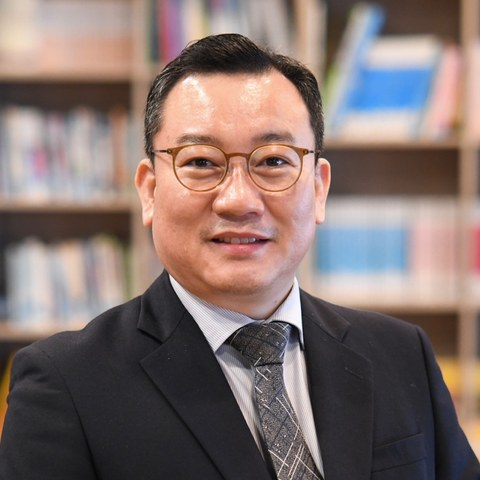
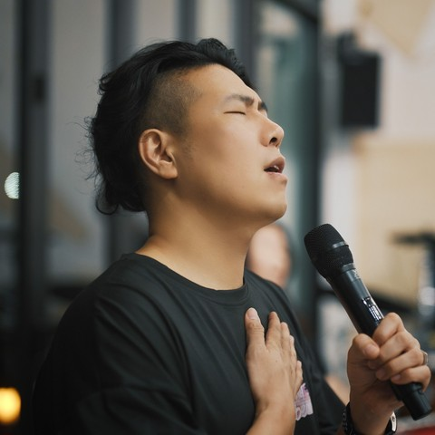
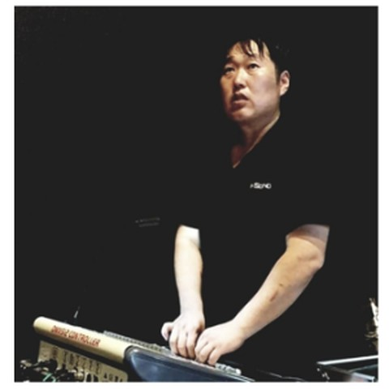

운영위원 · BOARD


사역을 함께 이끌어가는
대표(Arranger)는 공동체를 이끄는 수장의 자리가 아니라, 대외 협력을 위한 창구이자 내부 결속을 위한 상징적인 자리입니다. 기븐미니스트리의 모든 사역은 주어진 은사를 따라 함께 만들어 갑니다.
박동준 대표 · ARRANGER
은혜교회 담임목사
- · 프로듀싱
- · 쉘위워십 · 비컴퍼니
- · 유튜브 '더 그레이스' 라이브 방송
- · 극동방송
- · CCM 보컬리스트
방영규
대전산성침례교회 담임목사
- · 침례신학대학교 목회학 석사(M.Div)
- · THE GATE 청소년 캠프 대표
- · 대전극동방송 자문위원
- · 대전광역시 시청직장선교회 지도목사

육근원
세종시민교회 담임목사
- · 세종시민교회 담임목사
- · 기독교한국침례회 통일선교협의회 사무총장
- · 행사 기획 및 섭외, 협력 지원

최희돈
마스터 사운드 팀장
- · 자이온 음향(현 마스터 사운드) 팀장
- · 진향음향 실장 역임
- · Anysound 그룹 회장
- · BlessWay 선교단 프로듀서

황인용
애니커뮤니티 대표 · 조명감독
- · 애니커뮤니티 대표
- · 무대조명 감독
- · 행사 및 공연 시스템 전문